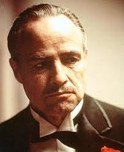
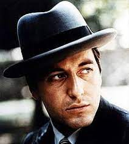
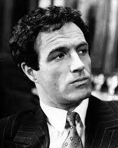
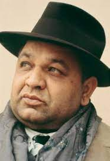
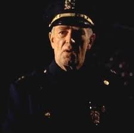
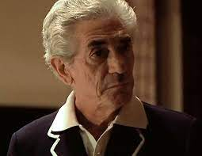
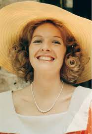
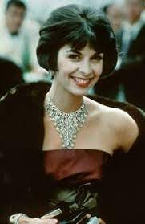
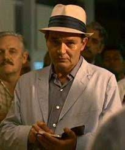

Vito Andolini, conocido popularmente como Vito Corleone, es un personaje ficticio y uno de los
protagonistas de la
novela El padrino del escritor italoestadounidense Mario Puzo. Además, el personaje ha aparecido en el
cine en las dos
primeras películas de la trilogía El padrino y en la serie de televisión The Godfather Saga, basadas en
la obra de Puzo
y dirigidas por el productor y director cinematográfico Francis Ford Coppola entre 1972 y 1977.

Michael es el hijo de Don Vito Corleone, el jefe de la familia Corleone, una familia dedicada al crimen
organizado.
Michael al principio del relato es un joven universitario bajo los estímulos de su padre, ya que este
desea un gran
futuro laboral para su hijo. Pero Michael decide contradecir los planes que su padre tenía preparados
para él y decide
alistarse en el Cuerpo de Marines de los Estados Unidos. Su familia, a pesar de estar muy descontenta
con la decisión de
Michael, continúa apoyándole con la esperanza de que cuando Michael acabara el servicio militar
continuase con sus
estudios.

Thomas Hagen era un niño nacido de una familia de origen germano-irlandés. Sus padres eran indiferentes
hacia él, ambos
alcohólicos y los cuales murieron por culpa de su adicción. Tenía una hermana, la cual fue dada en
adopción y nunca más
supo de ella. Vagaba por las calles con una terrible infección en los ojos que amenazaba con dejarlo
ciego, hasta que
Santino "Sonny" Corleone, le encontró un hogar al lado de los Corleone. Don Vito lo adoptó como hijo
aunque sin
formalidades legales, pues decía que sería una falta de respeto hacia los padres de Tom quitarle el
apellido de sus
padres.

Sonny es el primer hijo de don Vito y Carmella Corleone, y hermano mayor de Fredo, Michael y Connie.
Sonny es duro,
valiente, impulsivo y mujeriego; al final de su educación secundaria abandonó la escuela y se dedicó a
los asuntos y
negocios familiares, dirigiéndose a su padre de una manera que dice: "Yo vi como mataste a Fanucci y vi
como tiraste la
pistola, sere la próxima cabeza de la familia y tendré un lugar". Configurándose como la persona llamada
a suceder a su
padre al frente de la familia.

Clemenza se hizo amigo de Vito Corleone después de emigrar de Sicilia. Junto con Tessio, el trío se
inició como matones
de bajo nivel en el barrio de Little Italy en la ciudad de Nueva York. Clemenza, en concreto, se
especializó en la venta
de bienes robados, tales como pistolas y se convirtió en una figura clave en la creciente familia
Corleone. Vito lo
mantuvo cerca a través de los años, incluso lo convirtió en padrino de su hijo Sonny, aunque esto fue
para el control de
su brutalidad y ambición.

El capitán Marc McCluskey fue interpretado por Sterling Hayden.
En ambas obras (literaria y cinematorgráfica) tiene una aparición breve, aunque es un factor del inicio
de la trama
central de la primera entrega. Es un policía corrupto de la ciudad de New York pagado por "el turco"
Sollozo. Es un
aliado de Sollozzo en la cruzada de este contra los Corleone.

Jack Woltz es un director de cine que vive en Hollywood. Es un hombre poderoso, y en la novela hace
ostentación de su
amistad con J. Edgar Hoover, creador y director del FBI. Woltz es visitado un día por Tom Hagen, el
consigliere de la
familia Corleone; éste quiere pedirle a Woltz que deje que Johnny Fontane (el ahijado de don Vito
Corleone, jefe de la
familia Corleone) protagonice la película que está rodando actualmente; pero Woltz se niega amenazándolo
pensando que es
un tinterillo enviado por Fontane para intimidarlo, pero Woltz ordena investigarlo hasta descubrir que
trabaja para los
Corleone, entonces, Woltz le invita a cenar en su mansión.

Nació en el año 1924 en Nuevo Hampshire, y es hija de un importante ministro estadounidense. En la
universidad conocería
a su futuro marido, Michael Corleone (Al Pacino), el hijo del jefe mafioso Don Vito Corleone (Marlon
Brando). Ella sería
novia de Michael durante unos cuantos meses y después no volvió a saber nada de él, debido a que Michael
tuvo que
abandonar América, ya que asesinó al jefe de policía McCluskey y a Virgil "El Turco" Sollozzo, socio de
la familia
Tattaglia, y rival de la familia Corleone. Kay trataría de contactar numerosas veces con Michael, pero
sin éxito.

Connie nació en 1922 como única hija de Don Vito Corleone y Carmella Corleone. Es la hermana de Sonny,
Fredo y Michael
Corleone. Se casó con Carlo Rizzi. Esta elección (y el hecho de que Carlo es de ascendencia del norte
italiano) disgutó
mucho al padre de Connie, que sólo aceptó el matrimonio con la condición de que se casasen con un viejo
estilo de boda
siciliana.

Lampone comenzó su carrera en crimen organizado durante el régimen de Peter Clemenza, asesinando a
Paulie Gatto en El
Padrino. Él y otro soldato matan a Philip Tattaglia y una prostituta. Michael Corleone lo hace
caporegime después del
traslado de la familia a Nevada, y arregla la seguridad del complejo familiar del Lago Tahoe